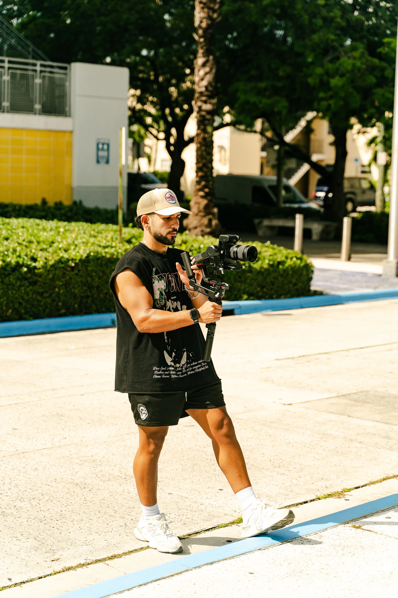
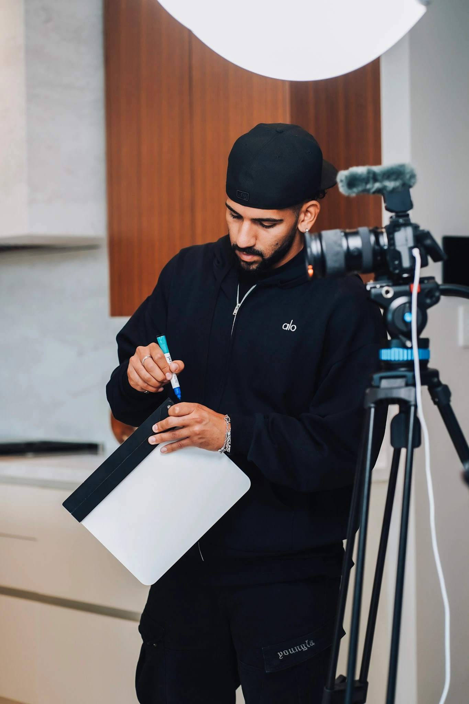
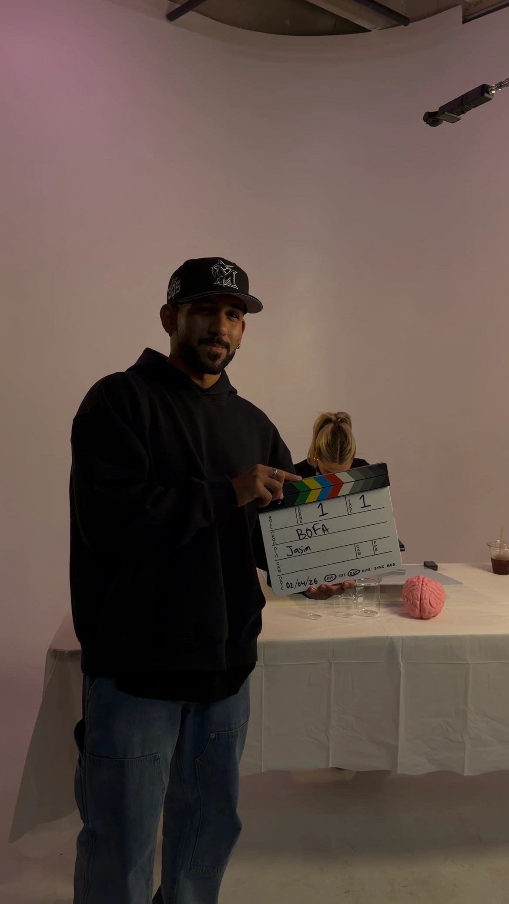
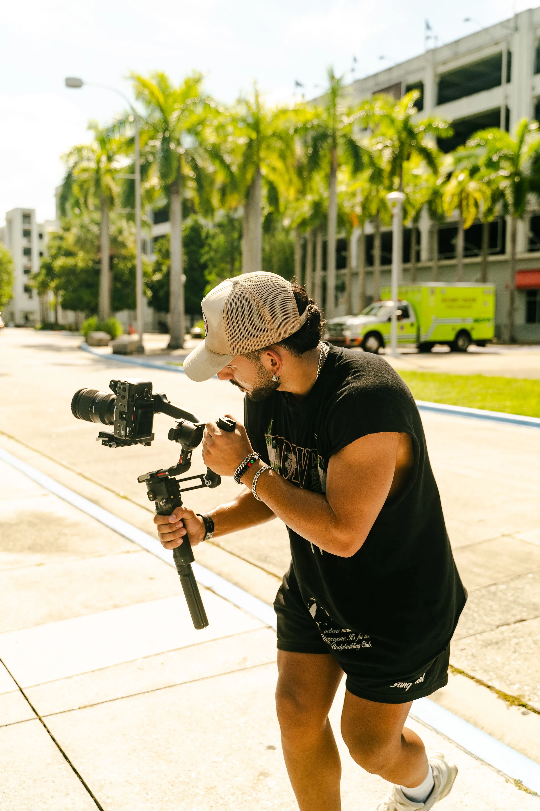
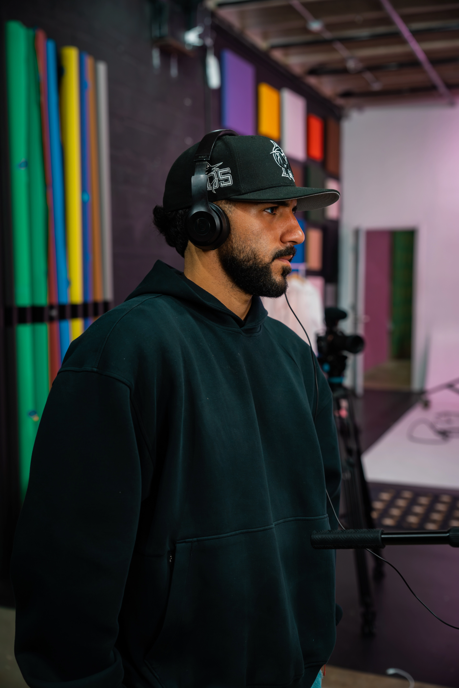
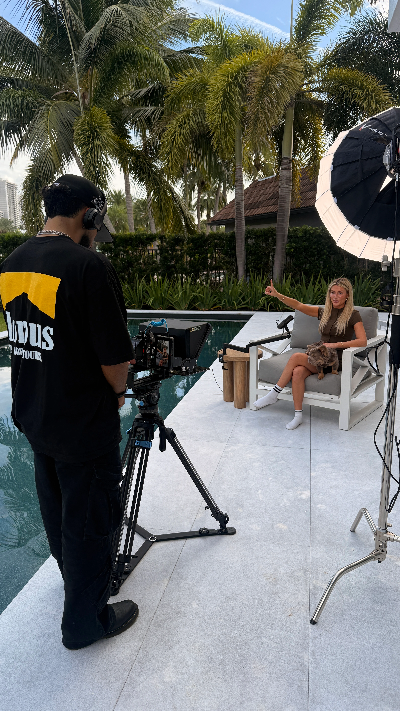

Hi, I'm Jasim, the founder of Jasimedia. What started as a passion for storytelling and creativity has grown into a full-service photo and video production company focused on helping brands, businesses, athletes, entrepreneurs, and organizations share their stories through impactful content.
Over the years, I've had the opportunity to work with a wide range of clients - from nonprofit organizations and national brands to professional athletes, fitness companies, conferences, hospitality groups, and growing businesses. No matter the project, my goal remains the same: create content that feels authentic, captures attention, and delivers results.
I believe the best content comes from genuine relationships and understanding the people behind the brand. That's why I take a hands-on approach to every project, working closely with clients to bring their vision to life while making the process seamless and enjoyable.
When you work with Jasimedia, you're not just hiring a videographer or photographer - you're partnering with someone who genuinely cares about your success and is invested in helping tell your story in the most compelling way possible.
Hey, I'm Jasim — a visual storyteller based out of [City]. I've always believed that the most powerful moments in life deserve to be captured with intention and creativity.
Whether it's a sweeping landscape, a candid portrait, or a cinematic short film, I bring the same passion and attention to detail to every project I take on.
Replace this with your own words!

Jasimedia is a South Florida-based creative production company specializing in high-quality photo and video content for brands, businesses, athletes, events, and entrepreneurs. Founded by Jasim, Jasimedia focuses on creating visually compelling stories that capture authentic moments, build brand awareness, and drive engagement across digital platforms.
From large-scale conferences, nonprofit campaigns, and fitness events to luxury hospitality, lifestyle brands, and personal brands, Jasimedia delivers professional content with a cinematic approach and fast, reliable execution.
Whether it's event coverage, promotional campaigns, interviews, social media content, or brand storytelling, every project is approached with creativity, attention to detail, and a commitment to exceeding expectations.
At its core, Jasimedia believes great content is more than just visuals - it's about creating meaningful connections, telling impactful stories, and helping clients showcase who they are in a way that resonates with their audience.
Jasimedia is a South Florida-based creative production company specializing in high-quality photo and video content for brands, businesses, athletes, events, and entrepreneurs. Founded by Jasim, Jasimedia focuses on creating visually compelling stories that capture authentic moments, build brand awareness, and drive engagement across digital platforms.
From large-scale conferences, nonprofit campaigns, and fitness events to luxury hospitality, lifestyle brands, and personal brands, Jasimedia delivers professional content with a cinematic approach and fast, reliable execution.
It all started when I picked up my first camera at [age/year]. What began as a hobby quickly turned into a full-blown obsession — chasing golden hour light, experimenting with angles, and telling stories one frame at a time. [Replace with your own journey — Part 1]





Whether it's event coverage, promotional campaigns, interviews, social media content, or brand storytelling, every project is approached with creativity, attention to detail, and a commitment to exceeding expectations.
At its core, Jasimedia believes great content is more than just visuals - it's about creating meaningful connections, telling impactful stories, and helping clients showcase who they are in a way that resonates with their audience.
Over the years I've had the privilege of working with [clients / brands / events], each one pushing me to grow my craft further. Today JASIMEDIA is more than just a brand — it's a commitment to capturing your story in the most authentic way possible. [Replace with your own journey — Part 2]